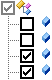

Open topic with navigation
Export Settings To File
The Export Settings To File icon opens the Select Parameters To Export dialog that allows you to export selected parameters of the receiver to an external *.json file.
To export receiver settings:
|
1.
|
Clicking the Export Settings To File icon starts analyzing of the receiver parameters. The parameters will be shown in the Select Parameters To Export dialog. Part of the parameters are ready to export by default ( set for the parameter), and part of the receiver parameters will be not exported to a file (set for the parameter). The parent check box is gray, if one or more child check boxes are not selected:  |
To find more information about export or import of the receiver parameters, click here.
|
2.
|
You can select any parameter(s) for export, by checking their check boxes. |
|
4.
|
Click  . The Save As dialog is displayed. . The Save As dialog is displayed. |
|
5.
|
Define the folder and File Name for export. |
|
8.
|
The confirmation message is displayed. Click OK to stop the operation. |